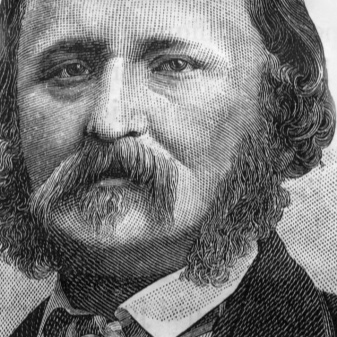
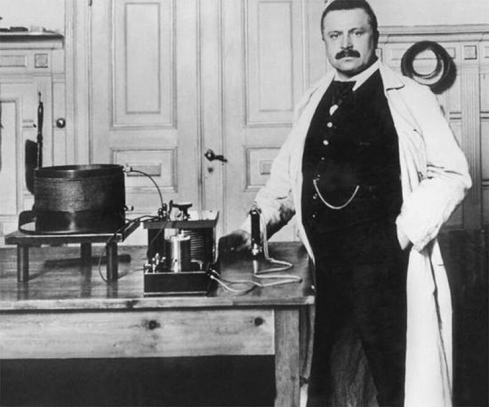

Теоретические сведения
Назначение кассетного магнитофона
Магнитофон – это устройство для записи и воспроизведения звука. В советские времена подобный прибор пользовался большой популярностью и был практически в каждом доме. Однако несмотря на такое широкое распространение магнитофонов, далеко не каждый из нас знает о том, как агрегат был изобретен и как им пользовались раньше.
Кассетные магнитофоны использовались не только для прослушивания музыки, но и для записи радиопередач, голоса, различных звуковых эффектов и даже создания домашних аудиозаписей. Они позволяли людям сохранять и воспроизводить информацию в удобной и переносной форме. Магнитофоны также играли важную роль в развитии музыкальной культуры, предоставляя возможность многим людям знакомиться с новыми жанрами и исполнителями.
С течением времени кассетные магнитофоны уступили место более современным технологиям, таким как компакт-диски и цифровые аудиоформаты. Однако они до сих пор остаются важной частью истории аудиооборудования и культуры в целом. Их изобретение и массовое распространение открыли новые горизонты в мире музыки и записи звука, сделав аудиоконтент доступным для широкой аудитории.
История изобретения
Исторически процесс создания магнитофона занял достаточно большое количество времени. Так, впервые магнитофон появился только спустя 40 лет после того, как была предпринята первая попытка записи звука. Первая же попытка изобретения непосредственно агрегата произошла в середине XIX века, а именно – в 1857 году. Ее совершил Л. Скотт.
На тот момент изобретатель создал так называемый фоноавтограф. С помощью этого устройства создавалась видимая схема звука, однако следует отметить, что она не воспроизводилась. Игла этого агрегата воспринимала колебания звука, в связи с чем значения отображались на специальном цилиндре в виде кривой линии.
Следующая важнейшая дата в истории – это 1877 год. В этом году был создан фонограф. С помощью этого прибора звук можно было записывать и воспроизводить. Если говорить о конструкции фонографа, то важно отметить, что ее основой являлся крутящий вал, который был замотан в фольгу и покрыт воском. По поверхности вала проходила игла, при этом создавая особые бороздки, а также в этот момент производился звук во вне. Однако фонограф просуществовал весьма недолго, так как его конструкция не являлась достаточно надежной.
Спустя 10 лет, в 1887 году, был изобретен граммофон, устройство которого было очень похоже на устройство фонографа. Однако игла проходила не по специализированному крутящему валу, а по круглой целлулоидной пластине.
Все эти события стали предпосылками создания и появления магнитофона таким, каким мы его
знаем и на сегодняшний день. Над изобретением устройства трудились ученые со всего
мира. Однако зачастую благодаря их стараниям появлялись другие устройства,
которые назывались и функционировали по-другому.
Если же говорить о непосредственной дате изобретения магнитофона, то это исторически важное
событие произошло 10 декабря 1898 года.
Заслуга создания магнитофона принадлежит датскому специалисту Вольдемару Поульсену. На самом деле,вопреки всеобщему убеждению, это устройства было изобретено не целенаправленно, а случайно. Все дело в том, что Вольдемар Поульсен хотел разыграть своего друга и записать эхо на устройство. Свою идею у него получилось воплотить в жизнь, попутно изобретя и магнитофон.
Так, Вольдемар Поульсен изучил публикацию Смита в журнале The Electrical World. Однако идеи Смита он немного видоизменил. Для создания устройства он взял хлопчатобумажную нитку, опилки из стали и металлическую проволоку. На тот момент свое изобретение инженер назвал телеграфоном. Он и стал прародителем современного магнитофона.
Основные функции и описание работы
Кассетный магнитофон представляет собой электромеханическое устройство, предназначенное для записи и воспроизведения аудиосигналов на кассеты. Его принцип работы основан на технологии магнитной записи, где звуковой сигнал преобразуется в изменения магнитного поля на специальной магнитной ленте, которая служит носителем информации. Когда пользователь включает магнитофон, механизм начинает двигать кассету, пропуская магнитную ленту через головку чтения/записи. Звуковой сигнал, проходя через микрофон или другой источник звука, преобразуется в электрический сигнал, который затем передается на головку записи. Здесь электрический сигнал модулирует магнитное поле на ленте, записывая аудиоданные. Для воспроизведения записанного материала процесс происходит в обратном направлении - механизм двигает кассету, магнитная лента проходит через головку воспроизведения, где электромагниты считывают изменения магнитного поля и преобразуют их обратно в аудио сигнал, который затем выводится на динамики или на наушники. Таким образом, кассетный магнитофон позволяет записывать и воспроизводить музыку, речь или другие звуковые материалы с помощью магнитной ленты, обеспечивая возможность сохранения и прослушивания аудиоданных в удобном формате.
Этот процесс записи и воспроизведения звука на кассете основан на принципе работы магнитофонов. Когда записываемый звуковой сигнал подается на преобразователь, он преобразуется в переменное электрическое напряжение, которое создает колебания магнитного поля на ленте кассеты. Эти колебания магнитного поля зафиксированы на ленте в виде магнитных частиц. При воспроизведении кассеты, магнитные частицы на ленте воздействуют на преобразователь и воссоздают переменное электрическое напряжение, соответствующее записанному звуковому сигналу. Этот сигнал затем усиливается и передается на динамики, которые преобразуют его в звуковые колебания. Таким образом, магнитофон обеспечивает процесс записи звука на кассету и его последующего воспроизведения, используя преобразование между электрическим сигналом и магнитным полем.
Другие возможные функции кассетного магнитофона могут включать регулировку баланса звука, настройку скорости воспроизведения, использование различных типов лент (например, металлические или хромовые), возможность записи с микрофона или других источников звука, а также наличие различных режимов воспроизведения (например, повторное воспроизведение или воспроизведение с паузой). Кроме того, некоторые современные кассетные магнитофоны могут иметь возможность подключения к компьютеру или другим устройствам для записи и воспроизведения музыки в цифровом формате.
Кассетные магнитофоны были широко распространены в 1970–1980-х годах как компактные устройства для прослушивания музыки и записи звука. Однако с развитием цифровых технологий и появлением новых форматов хранения аудиоинформации спрос на кассетные магнитофоны значительно снизился. В начале XXI века производство кассетных магнитофонов практически прекратилось, и цифровая дистрибуция стала основным способом распространения аудиозаписей. Тем не менее кассетные магнитофоны всё ещё пользуются популярностью среди аудиофилов и коллекционеров, которые ценят возможность слушать старые записи на оригинальных устройствах.
Кассетный магнитофон имеет свои особенности, такие как характерный звук магнитной ленты, возможность регулировки уровня записи и воспроизведения, а также компактный размер, который делает его удобным для переноски.
В целом, кассетный магнитофон является историческим устройством, которое остается популярным среди ценителей аутентичного звука и винтажной техники.